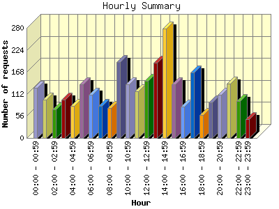
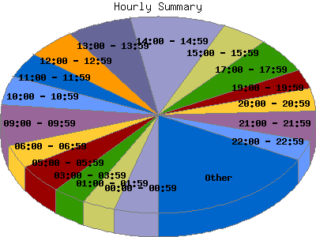

Report generated by Analog 5.91beta1 and Report Magic 2.21
|
Web Server Statistics for "Harish Narayanan (hnarayan) - June 2004" Report generated by Analog 5.91beta1 and Report Magic 2.21 |
The Hourly Summary identifies the level of activity broken down by each hour. Remember that one page hit can result in several server requests as the images for each page are loaded. This summary also compares the level of activity during working hours and after hours as a total for the report time frame.


| Hour | Number of requests | Number of bytes transferred | Percentage of the bytes | Percentage of the requests | |
|---|---|---|---|---|---|
| 1. | 00:00 - 00:59 | 128 | 2.636 MB | 4.21% | 4.46% |
| 2. | 01:00 - 01:59 | 97 | 1.103 MB | 1.76% | 3.38% |
| 3. | 02:00 - 02:59 | 73 | 592.189 KB | 0.92% | 2.54% |
| 4. | 03:00 - 03:59 | 98 | 1.655 MB | 2.64% | 3.42% |
| 5. | 04:00 - 04:59 | 82 | 1.387 MB | 2.21% | 2.86% |
| 6. | 05:00 - 05:59 | 136 | 1.866 MB | 2.98% | 4.74% |
| 7. | 06:00 - 06:59 | 110 | 1.476 MB | 2.36% | 3.83% |
| 8. | 07:00 - 07:59 | 82 | 2.377 MB | 3.80% | 2.86% |
| 9. | 08:00 - 08:59 | 77 | 1.075 MB | 1.72% | 2.68% |
| 10. | 09:00 - 09:59 | 194 | 4.688 MB | 7.49% | 6.76% |
| 11. | 10:00 - 10:59 | 136 | 1.775 MB | 2.84% | 4.74% |
| 12. | 11:00 - 11:59 | 118 | 2.478 MB | 3.96% | 4.11% |
| 13. | 12:00 - 12:59 | 146 | 3.827 MB | 6.11% | 5.09% |
| 14. | 13:00 - 13:59 | 191 | 2.233 MB | 3.57% | 6.66% |
| 15. | 14:00 - 14:59 | 279 | 7.036 MB | 11.24% | 9.72% |
| 16. | 15:00 - 15:59 | 137 | 4.958 MB | 7.92% | 4.78% |
| 17. | 16:00 - 16:59 | 80 | 4.777 MB | 7.63% | 2.79% |
| 18. | 17:00 - 17:59 | 166 | 3.164 MB | 5.05% | 5.79% |
| 19. | 18:00 - 18:59 | 58 | 3.252 MB | 5.20% | 2.02% |
| 20. | 19:00 - 19:59 | 91 | 926.653 KB | 1.45% | 3.17% |
| 21. | 20:00 - 20:59 | 109 | 1.022 MB | 1.63% | 3.80% |
| 22. | 21:00 - 21:59 | 139 | 1.139 MB | 1.82% | 4.84% |
| 23. | 22:00 - 22:59 | 94 | 6.294 MB | 10.05% | 3.28% |
| 24. | 23:00 - 23:59 | 48 | 919.513 KB | 1.43% | 1.67% |
| Work Hours (8:00am-4:59pm) | 1,358 | 32.847 MB | 52.47% | 47.33% | |
| After Hours (5:00pm-7:59am) | 1,511 | 29.751 MB | 47.53% | 52.66% | |
This report was generated on August 5, 2004 15:51.
Report time frame June 1, 2004 00:13 to June 30, 2004 23:30.
| Web statistics report produced by: | |
 Analog 5.91beta1 Analog 5.91beta1 |  Report Magic 2.21 Report Magic 2.21 |